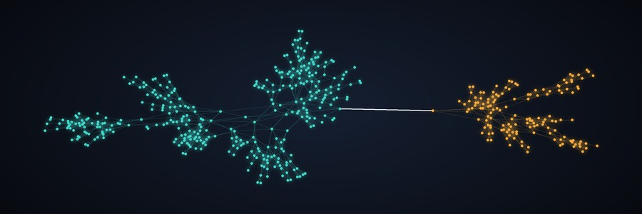

split_load_sim
graph modelsworking name
Graph-growth models that connect the Genius Study and Freedom of Necessity, descended from graphtacular (2019). Model outputs, not findings.
Runs on: No model · seeded Python graph models
What it is
split_load_sim uses graph theory as a model of how a mind's maps could be structured and how they grow. It connects the Genius Study (v8) and the book Freedom of Necessity. The graphs are models: not brain data, not neuroscience findings, and a vertex is not a neuron.
How it grows
One seed vertex starts at step 1 of a shared instruction list, the strand. Each round, every running vertex runs its current instruction:
branch(definition → consequence)complete_clustercloselink_regionfork_reserved(a second map joined by a bottleneck)bridge_regions(late merging)
Strands are YAML files checked on load. Randomness is seeded, so the same strand and seed always give the same graph. Every result is compared against random null graphs.
What it tests
For the study: Lane B's H1 says early exposure to the circle (Deus sive Natura) plus geometric form reduces split-model load. Two questions:
- Built into a growth model, do H1's assumptions produce the effect it claims?
- Could the data Lane A collects tell H1 apart from H2 (selection) and H3 (attractor)?
It does not test whether H1 is true of real people.
For the book: axiom A2 says the organization of the body's cells produces the mind. The graphs are a place to model how organized parts make one integrated map. Which of the book's claims, if any, the model should encode is still an open question.
What it shows so far
Synthetic, 50 seeds per strand.
- A reserved second map behind one bottleneck edge raises bridge load sharply over H1 (peak edge betweenness +0.22, Cohen's d 2.6). Part of that gap is built in. Modularity and clustering barely move, so they look like weak measures of split-model load.
- H1, H2 and H3 can be told apart even at 5 coded people (about 0.90 accuracy, chance 0.33), but mostly through timing, which the H2 and H3 models were written to differ on.
- Strict selection (H2) vs H1 is close to a coin flip: 0.61 accuracy at 5 people, 0.65 at 20 and 0.77 at 100 (chance 0.50). With the handful coded so far, the record could barely tell cultivation from selection.
Status
- Working name; it may change.
- The split-model load measures are provisional (the study names the idea but doesn't define a measure).
- The H2 and H3 models are proposed, and Jason hasn't signed off on their parameters.
- H3's graphs have more edges than the others, so they aren't directly comparable yet; a fix is paused on a branch.
- No real Lane A record has been read.
- 93 tests, all passing.
Run it
uv syncuv run sls run --strand strands/h1_circle_geometric.yaml --seeds 50 --out results/